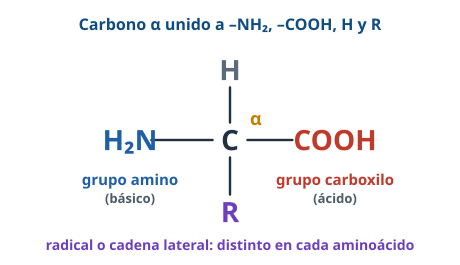
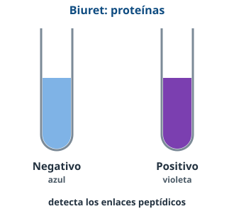

Bloque A · Biomoléculas · Tema 4
Proteínas
Veinte piezas, combinaciones casi infinitas y una regla de oro: la forma decide la función.
Usa ← → o el espacio para avanzar · F para pantalla completa
Directrices PAU 2026-27 · A.3.3¿Qué tenemos que saber?
Aminoácidos
Estructura, tipos según el radical, anfóteros. Enlace peptídico y formular péptidos.
Estructura
Primaria, secundaria (α y β), terciaria, cuaternaria y sus enlaces. Globulares y fibrosas.
Propiedades y funciones
Desnaturalización (T, pH). Ocho funciones con ejemplos.
Nuevo 26-27 · A.3.5Interpretar el ensayo de Biuret: violeta con proteínas.
Concepto¿Qué es una proteína?
Definición PAUMacromolécula de una o varias cadenas de aminoácidos unidos por enlaces peptídicos. C, H, O, N (y casi siempre S).
AminoácidosLa pieza básica

- Carbono α + –NH₂ + –COOH + H + R.
- 20 aminoácidos: solo cambia el radical R.
- Cα asimétrico (salvo glicina) → en las proteínas, L-aminoácidos.
AminoácidosCuatro tipos según el radical
AminoácidosAnfóteros: ácido o base según el pH
En agua: ion dipolar (–NH₃⁺ y –COO⁻). Por eso las proteínas amortiguan el pH.
Enlace peptídicoCarboxilo + amino − agua
Covalente
Muy estable (amida, –CO–NH–).
Doble enlace parcial
Rígido, no puede girar.
Coplanario
C, O, N y H en un plano.
Enlace peptídico¿Sabrías hacerlo?
🍬 El aspartamo está formado por ácido aspártico y fenilalanina. ¿Cuántos dipéptidos distintos pueden formar? (PAU 2016)
Dos: Asp-Phe y Phe-Asp, según qué aminoácido aporte el carboxilo. Siempre: N-terminal a la izquierda, C-terminal a la derecha.
✂️ La tripsina corta tras Lys o Arg. ¿Qué da con NH₂-Ala-Gly-Val-Trp-Ile-Gly-Arg-Cys-Cys-Met-Trp-COOH? (PAU 2014)
NH₂-Ala-Gly-Val-Trp-Ile-Gly-Arg-COOH y NH₂-Cys-Cys-Met-Trp-COOH (¡con sus extremos amino y carboxilo!).
EstructuraCuatro niveles
La primaria lo decide todoAnemia falciforme: cambiar un aminoácido de la hemoglobina (Glu → Val) altera su forma y su función.
Estructura secundariaα-hélice y lámina β
Puentes de H entre el C=O y el N–H de los enlaces peptídicos (no de los radicales).
Estructura terciariaEl plegamiento final
Enlaces entre radicales: disulfuro (covalente), puentes de H, iónicos, hidrofóbicos, Van der Waals.
Estructura terciaria y cuaternariaGlobulares, fibrosas y varias cadenas
CuaternariaUnión de varias cadenas con los mismos enlaces que la terciaria. Ej.: hemoglobina (4 cadenas). Una proteína de una sola cadena funciona con la terciaria.
PropiedadesDesnaturalizar no es romper la cadena
Desnaturalización: se pierden la 2.ª, 3.ª y 4.ª, se conserva la 1.ª → sin función. Renaturalización: vuelve la forma (si es reversible).
Propiedades¿Sabrías explicarlo?
🍳 ¿Por qué la clara se vuelve blanca y sólida al cocer el huevo? ¿Sigue alimentando igual?
El calor desnaturaliza sus proteínas. Sí alimenta: el valor nutritivo está en los aminoácidos, que se conservan.
💇 ¿Por qué el calor alisa el pelo y el efecto es reversible?
El calor rompe enlaces débiles de la queratina y cambia su forma; como la estructura primaria se conserva, recupera su forma original.
FuncionesUna proteína para cada trabajo
| Función | Ejemplos |
|---|
| Catalítica | Enzimas: amilasa, pepsina |
| Estructural | Colágeno, queratina, tubulina, histonas |
| Reserva | Ovoalbúmina, caseína |
| Transporte | Hemoglobina (O₂), lipoproteínas, citocromos |
| Contráctil | Actina y miosina, dineína |
| Reconocimiento | Receptores de membrana, glucoproteínas |
| Hormonal | Insulina, glucagón |
| Defensiva | Anticuerpos, fibrinógeno y trombina |
Laboratorio · Nuevo 26-27Biuret: proteínas en violeta

Reactivo azul → violeta con proteínas.
Detecta los enlaces peptídicos: positivo con clara de huevo, leche… (también desnaturalizadas).
Un aminoácido suelto da negativo.
Salud · A.4.2Proteínas en la dieta
Esenciales
Aminoácidos que no fabricamos (lisina, triptófano, metionina…): hay que comerlos.
Déficit
Pérdida de masa muscular, retraso del crecimiento, defensas bajas, edemas.
Exceso
Mucho nitrógeno que eliminar como urea: daño renal.
PAUAprovechamos proteínas de cualquier ser vivo porque la digestión las hidroliza a aminoácidos, los mismos 20 en todos.
Antes del examenErrores que restan puntos
- Decir que el calor rompe los enlaces peptídicos: desnaturaliza, no hidroliza.
- Situar los puentes de H de la α-hélice entre radicales: son entre C=O y N–H del esqueleto.
- Olvidar los extremos –NH₂ y –COOH al escribir péptidos.
- Contar mal: n aminoácidos → n − 1 enlaces y moléculas de agua.
- Dar funciones sin ejemplo cuando lo piden.
- Decir que una proteína desnaturalizada no alimenta.
¡A practicar!
La forma
es la función
Repasa el resumen, lee los apuntes completos con las preguntas PAU resueltas y entrénate en BioCelia → Entrenamiento.